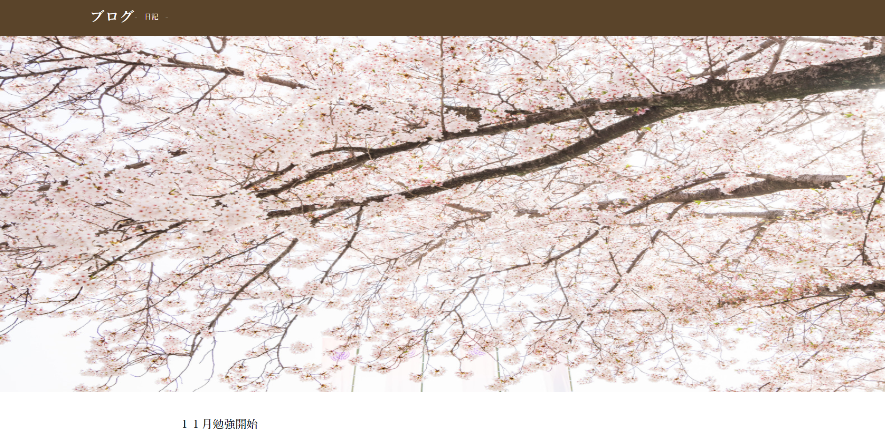

Works
サイトの概要
基礎学習を終えて初めて作ったサイトです(架空サイト)
目的
HTML,CSSのみでまずは完成させてアウトプットをする。
製作ポイント
簡易的なサイトですが、HTML,CSSでなにができるのか、どこまでできるのかを知るために制作しました。
使用ツール
HTML,CSS
制作過程
初めてのweb制作だったため、画像とテキストの幅調整など調べながら完成させていきました。

サイトの概要
サッカーの能力を検定する、サッカー検定のWebサイト(架空サイト)
目的
hoverイベントなどを使い見た目以外も身につける
制作ツール
HTML,CSS
制作ポイント
見た目のレイアウト他、HTML,CSSのみでイベントをつけて完成させました。
hover時の色の変化、画像のポジションを移動させて動いているように見せる動きをつけました。

サイトの概要
ポートフォリオサイトです。
目的
シンプルなデザインで見やすさを意識する。
制作ツール
HTML,CSS,javascript(jquery)
制作ポイント
まず、勉強開始前に二月中にポートフォリオを完成させることを決めて勉強を進めていきました。
シンプルなサイトを心掛けて、HTML,CSS,javascript(jquery)で仕上げ、レスポンシブ対応にしました。
技術的にもまだまだと思いますが、目標の2月中に完成する事が出来ました。このポートフォリオサイトを通じて目標を持ち、それに向けて計画的に勉強してきた過程が伝われば幸いです。